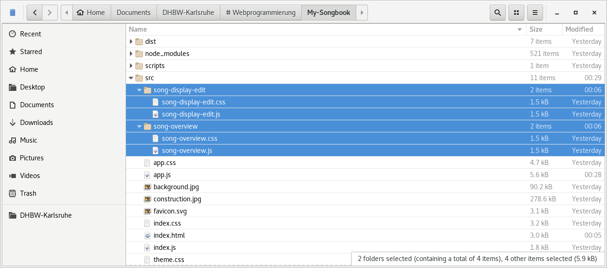
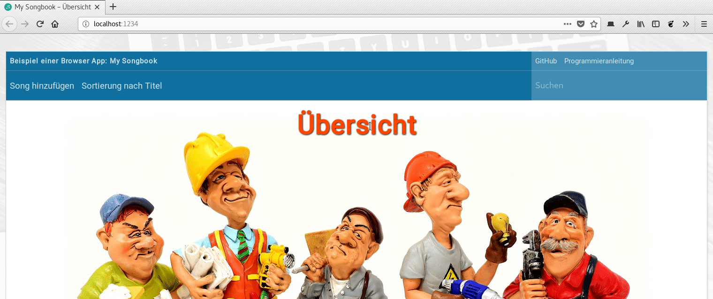
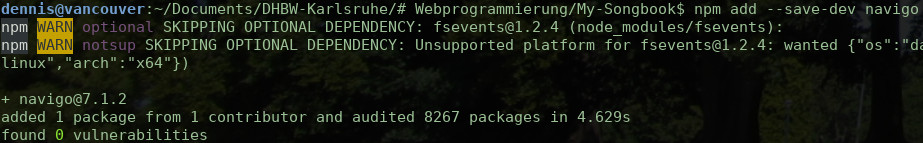
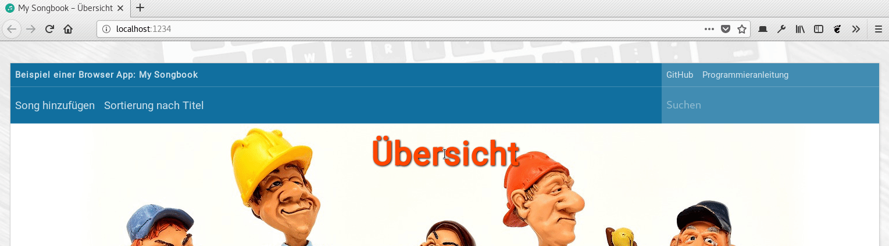

Bis hierhin sieht unsere App irgendwie noch so gar nicht wie eine App
aus. Sondern mehr wie eine normale Webseite. Schlimmer noch: Wie ein
ganz banales „Hallo, Welt!”. An dieser Stelle wollen wir daher das
Grundlayout der App erstellen, so dass das wir hinterher folgendes
Ergebnis sehen:
Das Layout der App, wenn wir hier fertig sind
Der angezeigte Inhalt ist natürlich nur ein Platzhalter und wird überhaupt
noch nicht in irgend einer Weise dynamisch erzeugt. Wir können ihn deshalb
einfach direkt in die HTML-Seite schreiben, damit wir beim Erstellen der
Stylesheets schon etwas sehen.
Entferne nun also das <h1> aus der
src/index.html und ersetze es durch folgenden
Code. Alle anderen Zeilen bleiben unverändert.
<!-- ========================= -->
<!-- Grundgerüst der Anwendung -->
<!-- ========================= -->
<section id="app">
<!-- Topbar -->
<header>
<!-- Obere Zeile (fester Inhalt) -->
<div class="top left">
<div class="item inactive">
<b>
Beispiel einer Browser App: My Songbook
</b>
</div>
</div>
<div class="top right">
<div class="item">
<a href="https://github.com/DennisSchulmeister/dhbwka-wwi-webprog-my-songbook" target="_blank">GitHub</a>
</div>
<div class="item">
<a href="https://www.wpvs.de/browser-app/" target="_blank">Programmieranleitung</a>
</div>
</div>
<!-- Untere Zeile (dynamisch je nach View) -->
<div class="bottom left">
<div class="item">
Song hinzufügen
</div>
<div class="item">
Sortierung nach Titel
</div>
</div>
<div class="bottom right">
<input placeholder="Suchen" />
</div>
</header>
<!-- Hauptbereich (dynamisch je nach View) -->
<main>
<div class="padding">
Under Construction
</div>
</main>
</section>
Denkt man sich den Dummy-Inhalt weg, lässt sich auch schon der Aufbau
der Seite erkennen:
<section id="app">
<header>
<!-- Obere Zeile (fester Inhalt) -->
<div class="top left">
… Inhalt in allen Views identisch …
</div>
<div class="top right">
… Inhalt in allen Views identisch …
</div>
<!-- Untere Zeile (dynamisch je nach View) -->
<div class="bottom left">
…
</div>
<div class="bottom right">
…
</div>
</header>
<!-- Hauptbereich (dynamisch je nach View) -->
<main>
…
</main>
</section>
Diese Inhalte müssen wir nun mit den zuvor angelegten Stylesheets in Form bringen,
da die eingebauten Layoutregeln des Browsers natürlich nicht wie von Zauberhand
einfach das obigen Layout erzeugen werden. Doch zuvor musst du dir von GitHub
folgende drei Bilder herunterladen:
Anschließend lege eine neue Datei namens src/theme.css und
folgendem Inhalt an. Sie enthält häufig benötigte
CSS-Variablen,
die wir an anderer Stelle immer wieder benötigen werden:
Damit haben wir erst einmal alle Dateien beisammen. Die Verzeichnisstruktur sollte jetzt
wie in der nächsten Abbildung bei dir aussehen:
Verzeichnisstruktur der Webanwendung an dieser Stelle
Damit das neue Stylesheet nun aber auch wirken kann, muss es erst noch importiert werden.
Ändere deshalb den Import des alten Stylesheets in der src/index.js
zu folgenden zwei Zeilen ab. Achte dabei aber darauf, wirklich erst die Datei
./index.css und dann die Datei ./theme.css
zu importieren:
import stylesheet from "./index.css";
import theme from "./theme.css";
Der Inhalt der Datei src/index.css ändert sich nun komplett
zu folgenden Zeilen. Zunächst ein paar allgemeine Definitionen:
/*
* Dieses Stylesheet enthält nur allgemeine Anweisungen, die sich auf die
* gesamte App auswirken. Hier dürfen keine Änderungen vorgenommen werden,
* die sich nur auf bestimmte Bereiche der Anwendung auswirken sollen.
*
* Damit @import funktioniert, muss die Anweisung vor allen anderen
* CSS-Anweisungen stehen. Dieses Stylesheet muss daher auch vor allen
* anderen importiert werden.
*/
@import url('https://fonts.googleapis.com/css?family=Roboto');
html, body {
padding: 0;
margin: 0;
height: 100%;
}
body {
font-family: 'Roboto', sans-serif;
font-size: 11pt;
line-height: 1.6;
color: var(--font-color);
}
Dann ein paar Anpassungen der Schriftgröße je nach Bildschirmauflösung:
Und zum Schluss wie immer ein Media Query, um auf großen Bildschirmen
die Darstellung zu optimieren, sowie ein paar nützliche Helferlein:
/*
* Flächendeckender Seitenhintergrund auf großen Bildschirmen
*/
@media (min-width: 80em) {
/* Hintergrundbild hinter dem Hauptbereich der App */
html {
/* https://pixabay.com/de/computer-notebook-kaffee-820281/ */
background-image: url(background.jpg);
background-attachment: fixed;
background-size: cover;
background-position: center;
}
/* Hauptbereich der App vergrößern */
body {
display: flex;
align-items: stretch;
justify-content: center;
}
body > * {
flex: 1;
}
}
/*
* Häufig benötigte Hilfsklassen
*/
.hidden {
display: none;
}
.padding {
padding: 0.5rem;
}
Wie du (hoffentlich) siehst, werden hier wirklich nur ganz allgemeine Dinge
geregelt, die sich auf die gesamte App auswirken. Spezifische Anpassungen
für einen einzelnen Bereich werden stattdessen in getrennten Stylesheets
vorgenommen, wobei es im Grunde genommen je JavaScript-Datei eine gleichnamige
CSS-Datei gibt. Die Datei
src/app.css beginnt daher wie immer mit ein paar
allgemeinen Definitionen:
/*
* Dieses Stylesheet darf nur Selektoren beinhalten, die mit #app beginnen.
* Denn wir wollen nicht, dass hier Eigenschaften aus anderen Bereichen der
* Anwendung überschrieben werden.
*/
#app {
background-color: white;
flex: 1;
}
Daraufhin folgt eine große Zahl an Regeln zur Gestaltung des Kopfbereichs.
Auch sie fangen alle mit #app an, um ihre Gültigkeit
zu begrenzen:
Und zum Schluß wie immer die Anpassung an große Bildschirme. Die Angabe
(min-width: 80em) in der fünften Zeile muss
exakt mit dem Media Query in der src/index.css
stehen, damit die Darstellung in jedem Fall passt:
/*
* Anpassung an große Bildschirme, sobald in der index.css das große
* Hintergrundbild eingeschaltet wird
*/
@media screen and (min-width: 80em) {
/* Rahmen um den Hauptbereich zeichnen */
#app {
max-width: 80em;
margin-top: 2em;
margin-bottom: 2em;
border: 1px solid rgba(32,32,32, 0.2);
box-shadow: 1px 1px 3px rgba(0,0,0, 0.1);
}
/* Topbar- und Toolbar-Inhalte nebeneinander */
#app header {
display: grid;
grid-template-columns: auto 20em;
}
#app header .top {
grid-row: 1;
}
#app header .bottom {
grid-row: 2;
}
#app header .left {
grid-column: 1;
display: flex;
justify-content: flex-start;
}
#app header .right{
grid-column: 2;
display: flex;
justify-content: flex-start;
background-color: var(--header-active-background-color);
color: var(--header-active-font-color);
}
#app header .item {
width: auto;
}
/* Nur den Bereich unterhalb der Toolbar scrollen */
#app {
display: flex;
flex-direction: column;
}
#app > main {
flex: 1;
overflow: auto;
}
}
Und das war es dann auch schon. Zugegeben war das jetzt zwar extrem viel Copy & Paste.
Auf dieser Grundlage können wir der App im nächsten Schritt nun aber ein wenig Leben einhauchen.
Rein visuell sieht unsere Seite jetzt schon viel mehr wie eine App aus. Man kann aber noch
nichts anklicken, weshalb es sich im Grunde genommen immer noch um eine statische HTML-Seite
handelt. An dieser Stelle wollen wir daher das Grundgerüst etwas erweitern und eine einfache
Navigation ermöglichen. Dadurch soll es möglich sein, zwischen der Übersichtsseite (die wir
an dieser Stelle immer noch nicht mit Inhalt füllen werden) und der späteren Detailseite
umzuschalten, so dass wir dann endgültig von einer echten Browser App sprechen können. Denn
im Gegensatz zu einer serverseitigen Webanwendung soll das hin und her Schalten zwischen den
Seiten komplett im Browser geschehen, ohne hierfür eine neue Seite vom Server anzufordern.
Umstrukturierung des HTML-Codes
Im ersten Schritt müssen wir die Datei src/index.html so umbauen,
dass jeder Bereich der App eine eigene <section> bekommt,
die wir über eine eindeutige Id adressieren können. Allerdings sollen diese neuen Bereiche
nicht sichtbar sein, da wir sonst ja nicht zwischen den einzelnen Bereichen umherschalten
könnten. Die CSS-Klasse hidden stellt deshalb sicher, dass wirklich
nur die erste <section id="app"> mit dem Anwendungsrahmen
und sonst nichts angezeigt wird.
Anschließend können wir den Dummy-Inhalt aus dem Grundgerüst wieder entfernen, so dass
davon nur folgende Zeile übrig bleiben. Den festen Inhalt der Topbar, der wirklich immer zu
sehen sein woll, behalten wir hier natürlich bei.
<!-- ========================= -->
<!-- Grundgerüst der Anwendung -->
<!-- ========================= -->
<section id="app">
<!-- Topbar -->
<header>
<!-- Obere Zeile (fester Inhalt) -->
<div class="top left">
<div class="item inactive">
<b>
Beispiel einer Browser App: My Songbook
</b>
</div>
</div>
<div class="top right">
<div class="item">
<a href="https://github.com/DennisSchulmeister/dhbwka-wwi-webprog-my-songbook" target="_blank">GitHub</a>
</div>
<div class="item">
<a href="https://www.wpvs.de/browser-app/" target="_blank">Programmieranleitung</a>
</div>
</div>
<!-- Untere Zeile (dynamisch je nach View) -->
</header>
<!-- Hauptbereich (dynamisch je nach View) -->
<main>
</main>
</section>
Den eben entfernten HTML-Code bauen wir stattdessen weiter unten in die <section>
für die Übersichtsseite wieder ein.¹
¹
Die CSS-Klasse bottom für die beiden <div>
in der Topbar haben wir hier absicshtlich weggelassen. Doch dazu später mehr.
Und auch die Detailseite gestalten wir ähnlich, da sie zur diesem Zeitpunkt natürlich auch noch keinen
wirklichen Inhalt besitzt. Immerhin bekommt sie in der Topbar jedoch bereits einen Eintrag, mit dem der
Anwender zurück auf die Übersichtsseite gelangen soll.
<!-- ================================== -->
<!-- View: Song anzeigen und bearbeiten -->
<!-- ================================== -->
<section id="song-display-edit" class="hidden">
<!-- Topbar -->
<header>
<div class="left">
<!-- Leer -->
</div>
<div class="right">
<div class="item overview">
Zurück zur Übersicht
</div>
</div>
</header>
<!-- Hauptbereich -->
<main>
<div class="padding">
Song anzeigen/bearbeiten
</div>
</main>
</section>
Austausch der sichtbaren Inhalte mit JavaScript
Mit diesen Änderungen nun an Ort und Stelle können wir uns an die Ausprogrammierung der
App-Klasse innerhalb der Datei src/app.js
machen. Denn sie soll für die Navigation innerhalb der App zuständig sein und zwischen den
verschiedenen Ansichten umschalten. Die eigentliche Arbeit macht dabei die folgende, neue
Methode, wobei der Unterstrich am Anfang des Namens ausdrückt, dass sie nur innerhalb der
Klasse selbst aufgerufen werden sollte. Erzwungen wird das von JavaScript allerdings nicht.
/**
* Auswechseln des sichtbaren Inhalts der App. Hierfür muss der Methode
* ein Objekt mit folgendem Aufbau übergeben werden:
*
* {
className: "CSS-Klassenname",
* topbar: [DOM Element, DOM Element, DOM Element, ...],
* main: [DOM Element, DOM Element, DOM Element, ...],
* }
*
* Beide Attribute (topbar und main) sind optional, was dazu führt, dass
* im jeweiligen Bereich einfach nichts angezeigt wird. Werden sie jedoch
* mitgegeben, müssen sie mit forEach(element => { … }) iteriert werden
* können, um ihren Inhalt in den DOM-Baum zu integrieren.
*
* Wichtig ist, dass die übergebenen Elemente noch an keiner Stelle im
* DOM vorhanden sein dürfen. Werden die Elemente in der index.html
* als Vorlage definiert, muss hier deshalb eine Kopie anstelle der
* Elemente selbst übergeben werden!
*
* @param {Object} content Objekt mit den anzuzeigenden DOM-Elementen
*/
_switchVisibleContent(content) {
// <header> und <main> des HTML-Grundgerüsts ermitteln
let app = document.querySelector("#app");
let header = document.querySelector("#app > header");
let main = document.querySelector("#app > main");
// Zuvor angezeigte Inhalte entfernen
// Bei der Topbar nur die untere Zeile, im Hauptbereich alles!
app.className = "";
header.querySelectorAll(".bottom").forEach(e => e.parentNode.removeChild(e));
main.innerHTML = "";
// CSS-Klasse übernehmen, um die viewspezifischen CSS-Regeln zu aktivieren
if (content && content.className) {
app.className = content.className;
}
// Neue Inhalte der Topbar einfügen
if (content && content.topbar) {
content.topbar.forEach(element => {
element.classList.add("bottom");
header.appendChild(element);
});
}
// Neue Inhalte des Hauptbereichs einfügen
if (content && content.main) {
content.main.forEach(element => {
main.appendChild(element);
});
}
}
Der Quellcode ist im Grunde genommen nicht sehr kompliziert. Dennoch sollten wir ihn an dieser
Stelle kurz durchgehen, um sicherzustellen, dass du ihn wirklich verstehst:
Zunächst greift die Methode auf das DOM zu, um sich die
<section id="app"> sowie die darin enthaltenen
<header>- und
<main>-Elemente zu besorgen.
Anschließend werden die zuvor sichtbaren Inhalte verworfen. Im Falle der
Topbar mit einer forEach()-Schleife, die nur
die Elemente der unteren Zeile erwischt. Und im Hauptbereich durch
Überschreiben des innerHTML-Attributs,
was de facto seinen kompletten Inhalt löscht.
Dann wird mit einer if-Abfrage gebprüft, ob
ob das content-Objekt ein Attribut mit dem
Namen classList enthält. Falls ja wird die
CSS-Klasse des <section id="app">
entsprechend abgeändert, damit etwaige CSS-Regeln, die sich auf
diese Klasse beziehen, wirksam werden können.
Danach wird geprüft, ob ein neuer Inhalt für die Topbar übergeben wurde.
Falls ja, wird in einer Schleife über die neuen Topbar-Elemente jedem
Element die CSS-Klasse bottom hinzugefügt
und die Elemente an den <header>
angehängt.
Dann erfolgt mit einer ähnlichen Abfrage eine Prüfung für den Hauptbereich
der App, nur dass den Elementen hier keine zusätzliche CSS-Klasse mitgegeben
werden muss.
Auf diese Weise können wir nun den angezeigten Inhalt der App variieren. Wirklich
anwenderfreundlich ist die neue Methode aber noch nicht, da wir ihr, um eine neue
Seite anzuzeigen, genau die hierfür notwendigen DOM-Elemente mitgegeben müssen.
Besser wäre es jedoch, wenn wir eine bestimmte Seite einfach aufrufen könnten,
ohne genau zu wissen, wie die Seite eigentlich aufgebaut ist. Wir benötigen daher
für jede Seite eine weitere Methode, die genau diesen Zweck erfüllt. Doch hierfür
müssen wir uns erst noch überlegen, wie wir den Quellcode der App weiter strukturieren
wollen.
Eine Klasse je Bildschirmseite
Natürlich könnten wir die komplette Anwendungslogik einfach in der Datei src/app.js
oder sogar nur in der Klasse App ausprogrammieren. Dem Computer wäre das
ziemlich gleich. Allerdings wissen wir, dass die beiden Seiten mit der Übersicht und zur Anzeige
eines Songtextes nicht wirklich viel gemeinsam haben. Alles in eine Klasse zu packen wäre daher
ziemlich unübersichtlich. Das alte Sprichwort „teile und herrsche” liefert stattdessen viel bessere
Ergebnisse, da es uns an die
SOLID-Kriterien
und hier insbesondere an das Single-Responsibility-Prinzip erinnert. Es liegt deshalb nahe, für
jede Bildschirmseite eine eigene Klasse vorzusehen. Und für jede Klasse dementsprechend eine
eigene JavaScript-Datei und ein eigenes Stylesheet, die wir um die Übersichtlichkeit noch
weiter zu erhöhen, jeweils in ein eigenes Verzeichnis packen.
Bevor wir also weiter programmieren, lege zunächst folgende Dateistruktur an. Die Dateien
können dabei an dieser Stelle noch leer bleiben:
src/song-overview/song-overview.js: Klasse SongOverview für die Übersichtsseite
src/song-overview/song-overview.css: Stylesheet für die Übersichtsseite
src/song-display-edit/song-display-edit.js: Klasse SongDisplayEdit für die Detailseite
src/song-display-edit/song-display-edit.css: Stylesheet für die Detailseite
Das Ergebnis sollte dementsprechend so aussehen:

Erweiterte Verzeichnisstruktur für die Übersichts- und die Detailseite
Die beiden Stylesheets sind am einfachsten. Hier wollen wir zunächst nur etwas Dummy-Inhalt
einbauen, damit wir später sehen, ob sie auch wirklich ausgewertet werden. Füge daher in die
Datei src/song-overview/song-overview.css folgende Zeile ein:
/*
* Dieses Stylesheet darf nur Selektoren beinhalten, die mit .song-overview
* beginnen. Denn wir wollen nicht, dass hier Eigenschaften aus anderen Bereichen
* der Anwendung überschrieben werden.
*/
.song-overview main {
color: orangered !important;
}
Und in die src/song-display-edit/song-display-edit.css folgende Zeilen:
/*
* Dieses Stylesheet darf nur Selektoren beinhalten, die mit .song-display-edit
* beginnen. Denn wir wollen nicht, dass hier Eigenschaften aus anderen Bereichen
* der Anwendung überschrieben werden.
*/
.song-display-edit main {
color: orchid !important;
}
Bei den beiden Klassen wird es hingegen schon interessanter, da wir uns noch gar
keine Gedanken darüber gemacht haben, welche Methoden sie besitzen sollen und zu
welchem sie aufgerufen werden. Letztlich gibt es auch gar keine universelle Lösung
hierfür, in der Praxis hat sich aber ganz unabhängig von der Art der Anwendung oder
der verwendeten UI-Technologie folgende, einfache Struktur bewährt:
Jedes Mal, wenn eine Seite aufgerufen wird, wird ein neues Objekt der dazugehörigen
Klasse erzeugt. Das Objekt bleibt dabei so lange aktiv, wie die Seite sichtbar ist.
Wird von einer Seite auf dieselbe Seite nur mit anderen Daten gewechselt (zum Beispiel
von der Detailseite eines Songs zur Detailseite eines anderen Songs), wird hierfür
ebenfalls ein neues Objekt erzeugt.
Denn dies ermöglicht es, die Klassen einfach zu halten und für die Anzeige benötigte
Informationen wie die Song-ID einfach dem Konstruktor zu übergeben.
Bevor eine neue Seite aufgerufen wird, wird die Methode onShow()
des jeweiligen Objekts aufgerufen.
Davor wird jedoch erst die Methode onLeave() der aktuell sichtbaren
Seite aufgerufen, um ihr die Möglichkeit zu geben, Aufräumarbeiten durchzuführen oder den
Seitenwechsel zu unterbinden.
Eine Methode mit dem Namen getTitle() gibt den Titel der aktuellen
Seite zurück, um ihn in der Titelzeile des Browserfensters anzuzeigen.
Sobald eine Seite verlassen wurde, kann das dazugehörige Objekt abgeräumt werden.
Damit haben wir einen klaren Lebenszyklus definiert, der genau vorschreibt, zu welchem Zeitpunkt
neue Objekte entstehen, welche Methoden dementsprechend aufgerufen werden und wann die Objekte
wieder verschwinden. Außerdem haben wir eine Möglichkeit geschaffen, besondere Fälle wie das
Vorliegen nicht gespeicherter Daten abzufangen, bei denen wir den Anwender erst fragen müssen,
ob er seine Änderungen sichern will, oder wir den Aufruf der Folgeseite ganz einfach unterbinden.
Die Datei src/song-overview/song-overview.js soll dementsprechend
folgenden Inhalt besitzen.
"use strict";
import stylesheet from "./song-overview.css";
/**
* View mit der Übersicht der vorhandenen Songs.
*/
class SongOverview {
/**
* Konstruktor.
* @param {Objekt} app Zentrales App-Objekt der Anwendung
*/
constructor(app) {
this._app = app;
}
/**
* Von der Klasse App aufgerufene Methode, um die Seite anzuzeigen. Die
* Methode gibt daher ein passendes Objekt zurück, das an die Methode
* _switchVisibleContent() der Klasse App übergeben werden kann, um ihr
* die darzustellenden DOM-Elemente mitzuteilen.
*
* @return {Object} Darzustellende DOM-Elemente gemäß Beschreibung der
* Methode App._switchVisibleContent()
*/
onShow() {
// Machen wir gleich
}
/**
* Von der Klasse App aufgerufene Methode, um festzustellen, ob der Wechsel
* auf eine neue Seite erlaubt ist. Wird hier true zurückgegeben, wird der
* Seitenwechsel ausgeführt.
*
* @param {Function} goon Callback, um den Seitenwechsel zu einem späteren
* Zeitpunkt fortzuführen, falls wir hier false zurückgeben
* @return {Boolean} true, wenn der Seitenwechsel erlaubt ist, sonst false
*/
onLeave(goon) {
return true;
}
/**
* @return {String} Titel für die Titelzeile des Browsers
*/
get title() {
return "Übersicht";
}
}
export default SongOverview;
Die Datei src/song-display-edit/song-display-edit.js soll hingegen
folgenden Inhalt besitzen:
"use strict";
import stylesheet from "./song-display-edit.css";
/**
* View zur Anzeige oder zum Bearbeiten eines Songs.
*/
class SongDisplayEdit {
/**
* Konstruktor.
*
* @param {Objekt} app Zentrales App-Objekt der Anwendung
* @param {String} id ID des darzustellenden Songs
* @param {String} mode "new", "display" oder "edit"
*/
constructor(app, id, mode) {
this._app = app;
this._id = id;
this._mode = mode;
}
/**
* Von der Klasse App aufgerufene Methode, um die Seite anzuzeigen. Die
* Methode gibt daher ein passendes Objekt zurück, das an die Methode
* _switchVisibleContent() der Klasse App übergeben werden kann, um ihr
* die darzustellenden DOM-Elemente mitzuteilen.
*
* @return {Object} Darzustellende DOM-Elemente gemäß Beschreibung der
* Methode App._switchVisibleContent()
*/
onShow() {
// Machen wir gleich
}
/**
* Von der Klasse App aufgerufene Methode, um festzustellen, ob der Wechsel
* auf eine neue Seite erlaubt ist. Wird hier true zurückgegeben, wird der
* Seitenwechsel ausgeführt.
*
* @param {Function} goon Callback, um den Seitenwechsel zu einem späteren
* Zeitpunkt fortzuführen, falls wir hier false zurückgeben
* @return {Boolean} true, wenn der Seitenwechsel erlaubt ist, sonst false
*/
onLeave(goon) {
return true;
}
/**
* @return {String} Titel für die Titelzeile des Browsers
*/
get title() {
switch (this._mode) {
case "new":
return "Song hinzufügen";
case "edit":
return "Song bearbeiten";
default:
return "Song anzeigen";
}
}
}
export default SongDisplayEdit;
Weitere Methoden für die Klasse App
Da der Vertrag mit dem View-Klassen nun klar ist, besitzen wir alle Informationen, um die
Klasse App nun zu Ende zu programmieren. Füge deshalb über der
Methode _switchVisibleContent() eine neue Methode mit dem Namen
_switchVisibleView() ein, die sie aufruft und hierfür ein
View-Objekt entgegen nimmt:
/**
* Hilfsklasse zum Umschalten auf eine neue Seite. Sie ruft zunächst die
* Methode onLeave() der gerade sichtbaren View auf und prüft damit, ob
* die View verlassen werden kann. Falls ja ruft sie die Methode onShow()
* der neuen View auf und übergibt das Ergebnis an die eigene Methode
* _switchVisibleContent(), um den sichtbaren Inhalt der Seite auszutauschen.
*
* @param {Object} view View-Objekt mit einer onShow()-Methode
* @return {Boolean} Flag, ob die neue Seite aufgerufen werden konnte
*/
_switchVisibleView(view) {
// Callback, mit dem die noch sichtbare View den Seitenwechsel zu einem
// späteren Zeitpunkt fortführen kann, wenn sie in der Methode onLeave()
// false zurückliefert. Dadurch erhält sie die Möglichkeit, den Anwender
// zum Beispiel zu fragen, ob er ungesicherte Daten speichern will,
// bevor er die Seite verlässt.
let goon = () => this._switchVisibleView(view);
// Aktuelle View fragen, ob eine neue View aufgerufen werden darf
if (this._currentView && !this._currentView.onLeave(goon)) {
return false;
}
// Alles klar, aktuelle View nun wechseln
document.title = `${this._title} – ${view.title}`;
this._currentView = view;
this._switchVisibleContent(view.onShow());
return true;
}
/**
* …
*/
_switchVisibleContent(content) {
…
}
Die zwei Instanzattribute this._currentView und
this._title müssen hierfür im Konstruktor definiert
werden:
Und damit das Ganze einfach zu verwenden ist, legen wir nun für jede Seite eine
eigene, für die öffentliche Verwendung freigebene Methode an, mit der sie überall
in der App aufgerufen werden kann. Die Methode start()
passen bei der Gelegenheit dann auch gleich noch an, damit beim Aufruf der App
immer die Überssichtsseite geladen wird:
…
import SongDisplayEdit from "./song-display-edit/song-display-edit.js";
import SongOverview from "./song-overview/song-overview.js";
/**
* …
*/
class App {
…
/**
* Ab hier beginnt die Anwendung zu laufen.
*/
start() {
this.showSongOverview();
}
/**
* Aufruf der Übersichtsseite der vorhandenen Songs.
* @return {Boolean} Flag, ob die neue Seite aufgerufen werden konnte
*/
showSongOverview() {
let view = new SongOverview(this);
this._switchVisibleView(view);
}
/**
* Aufruf der Detailseite zur Anzeige oder zum Bearbeiten eines Songs.
*
* @param {String} id Song-ID
* @param {String} mode "new", "display" oder "edit"
* @return {Boolean} Flag, ob die neue Seite aufgerufen werden konnte
*/
showSongDisplayEdit(id, mode) {
let view = new SongDisplayEdit(this, id, mode);
this._switchVisibleView(view);
}
/**
* …
*/
_switchVisibleView(view) {
…
}
}
Ausprogrammieren der onShow()-Methoden
Damit das Ganze nun auch wirklich funktioniert, müssen wir noch die Methode
onShow() unserer beiden View-Klassen ausprogrammieren.
Denn noch übergeben wir dem App-Objekt keine DOM-Elemente
zum Anzeigen und wir registrieren auch noch keine Event Handler, mit denen der
Anwender zwischen den Seiten umherschalten könnte.
Öffne daher noch einmal die Datei src/song-overview/song-overview.js
und ersetze die onShow()-Methode durch die nun folgende Version:
Beide Methoden sind prinzipiell gleich aufgebaut. Um sie zu verstehen müssen wir allerdings
erst einen Bogen zurück zum Anfang des Kapitels machen. Dort haben wir nämlich den HTML-Code
der Datei src/index.html etwas umgeräumt und zwei
<section>-Elemente für die beiden Unterseiten angelegt.
Auf diese Elemente greifen wir nun zu, um die anzuzeigenden HTML-Elemente aus dem Document
Object Model auszulesen. Allerdings erzeugen wir durch Aufruf der Methode
cloneNode(true) eine tiefe Kopie der ausgelesenen Elemente, da der
Kommentar vor der Methode App._switchVisibleContent() eindeutig
besagt, dass ihr keine Elemente übergeben werden dürfen, die sich bereits im DOM-Baum der
HTML-Seite befinden.
Mit diesen Elementen bauen wir dann das content-Objekt auf, welches
die Methode App._switchVisibleContent() von uns erwartet. Daraufhin
suchen wir uns in der Topbar jeweils ein Element, mit dem der Anwender zwischen den Seiten
umschalten kann und registrieren einen Click Event Handler darauf. In der entsprechenden
Handler-Funktion rufen wir daher die jeweils richtige show…()-Methode
des App-Objekts auf, um die Seite tatsächlich zu wechseln.
Und am Ende geben wir die content-Struktur zurück, damit die Methode
App._switchVisibleView(), von der wir aufgerufen werden, sie an die
Methode App._switchVisibleContent() übergeben kann.
Wenn du alles richtig gemacht hast, solltest du daher nun zwischen den beiden Seiten umherschalten
können. Dabei sollte dann auch aufgrund der unterschiedlichen Stylesheets die Schriftfarbe von
orange auf lila wechseln, wie in der folgenden Animation dargestellt.

All der Mühen Lohn: Eine funktionierende Navigation innerhalb der App
Zugegeben, das war schon eine ganze Menge Code, der da eben zusammenpassen musste, bevor wir
wirklich zwischen den beiden Seiten hin und her schalten konnten. Doch damit hast du nun eine
vollständige Grundstruktur zur Verfügung, die im Grunde genommen auf jede Art von Anwendung
ausgerollt werden kann. Du musst nur die beiden Klassen für die Songübersicht und die Details
zu einem Song durch eigene Klassen ersetzen. Ein paar Nachteile hat die bisherige Lösung aber
noch, weshalb wir sie an dieser Stelle noch etwas verfeinern wollen:
Die Views unserer App besitzen keine eindeutigen URLs und können daher nur per JavaScript
aufgerufen werden. Dadurch kann eine View (zum Beispiel für einen bestimmten Song) nicht
durch Eingabe der richtigen Adresse im Browser direkt aufgerufen werden.
Auch können wir keine einfachen <a>-Elemente innerhalb des
HTML-Codes verwenden, um einen Link auf eine andere View zu platzieren. Wir müssen immer
zusätzliche Event Handler schreiben und den Seitenwechsel mit JavaScript durchführen.
Der Zurück-Button des Browsers sowie ganz allgemein ein Aufruf über den Browserverlauf
wird nicht unterstützt.
Die Lösung all dieser Probleme hört auf den Namen
HTML5 History API.
Doch anstatt jetzt uns jetzt selbst damit herumzuschalgen (die Details richtig hinzubekommen ist
tatsächlich nicht ganz einfach), wollen wir auf eine Library zurückgreifen, die das alles viel
besser kann. Wir wollen einen „Single Page Router” verwenden, der es uns ganz einfach ermöglicht,
eine URL-Struktur für unsere App zu definieren und dabei festzulegen, was beim Aufruf welcher URL
passieren soll. Den Grundstock dafür haben wir bereits im letzten Teilkapitel gelegt. Jetzt geht
es nur noch darum, die ganze Sache ein wenig zu optimieren.
Installation von Navigo
Die Library, die wir hier verwenden wollen, heißt navigo.
Sie implementiert einen einfachen Single Page Router, der im Gegensatz zu vielen ähnlichen
Bibliotheken ganz ohne fremde Abhängigkeiten auskommt und daher in nahezu jede beliebige
Webanwendung integriert werden kann. Und wie das
README auf GitHub
andeutet, scheint sie relativ einfach nutzbar zu sein. Grund genug also mal wieder das gute alte
Terminal anzuschmeißen, mit cd in unser Projektverzeichnis zu wechseln
die Library mit folgendem Befehl zu installieren:
npm add --save-dev navigo
Die installation sollte dabei in gewohnter node.js-Manier schnell und geräuschlos über die Bühne gehen.

Installation des navigo Single Page Routers
Anpassungen an der App-Klasse
Um den Single Page Router zu initialisieren müssen wir ein paar kleinere Umbauten der
App-Klasse vornehmen. Allerdings nichts allzu dramatisches.
Zunächst müssen wir die Klasse Navigo aus dem Modul
navigo/lib/navigo.js importieren, was wir dank Parcel einfach
tun können, ohne hierfür auch nur eine Datei umkopieren zu müssen:
…
import Navigo from "navigo/lib/navigo.js";
import SongDisplayEdit from "./song-display-edit/song-display-edit.js";
import SongOverview from "./song-overview/song-overview.js";
…
class App { … }
Danach können wir den Konstruktor von App wie folgt erweitern:
constructor() {
this._title = "My Songbook";
this._currentView = null;
// Single Page Router aufsetzen
this._router = new Navigo();
this._currentUrl = "";
this._navAborted = false;
this._router.on({
"*": () => this.showSongOverview(),
"/song/new/": () => this.showSongDisplayEdit("", "new"),
"/song/display/:id/": params => this.showSongDisplayEdit(params.id, "display"),
"/song/edit/:id": params => this.showSongDisplayEdit(params.id, "edit"),
});
this._router.hooks({
after: (params) => {
if (!this._navAborted) {
// Navigation durchführen, daher die neue URL merken
this._currentUrl = this._router.lastRouteResolved().url;
} else {
// Navigation abbrechen, daher die URL in der Adresszeile
// auf den alten Wert der bisherigen View zurücksetzen
this._router.pause(true);
this._router.navigate(this._currentUrl);
this._router.pause(false);
this._navAborted = false;
}
}
});
}
Das sieht jetzt erst einmal sehr komplex aus. Wichtig aber nur der Aufruf von
this._router.on({…}) als Herzstück dieser Anpassung.
Alle anderen Zeilen, bis auf die Erzeugung des Router-Objekts selbst könnte man
auch weglassen. Sie werden nur benötigt, weil wir die Navigation in bestimmten
Fällen unterbrechen wollen und den Navigo hierfür ein wenig zum Mitspielen
überreden müssen.
Hier wird die URL-Struktur der Seite definiert, wobei jedes URL-Pattern mit einer
anonymen Lambda-Funktion (zu erkennen an () => > …)
verknüpft ist. Es liegt nahe, dass der Router die entsprechende Lambda-Funktionen
aufruft, wenn eine URL erkannt wurde, um dadurch den sichtbaren Inhalt zu wechseln.
Praktischerweise können wir hier unsere Methoden von vorhin direkt weiterverwenden.
In der start()-Methode müssen wir nun nicht mehr explizit
die Übersichtsseite aufrufen. Stattdessen sagen wir dem Router hier, dass er die
URL, mit der die gesamte App gestartet wurde, auswerten und die anzuzeigende View
automatisch erkennen soll:
start() {
this._router.resolve();
}
Das sind eigentlich schon alle Änderungen an der Klasse App.
Damit aber das Unterbrechen der Navigation richtig funktioniert, müssen wir die
Methode _switchVisibleView() noch ein klein wenig modifizieren.
Die neue Version lautet wie folgt:
_switchVisibleView(view) {
// Callback, mit dem die noch sichtbare View den Seitenwechsel zu einem
// späteren Zeitpunkt fortführen kann, wenn sie in der Methode onLeave()
// false zurückliefert. Dadurch erhält sie die Möglichkeit, den Anwender
// zum Beispiel zu fragen, ob er ungesicherte Daten speichern will,
// bevor er die Seite verlässt.
let newUrl = this._router.lastRouteResolved().url;
let goon = () => {
// ?goon an die URL hängen, weil der Router sonst nicht weiternavigiert
this._router.navigate(newUrl + "?goon");
}
// Aktuelle View fragen, ob eine neue View aufgerufen werden darf
if (this._currentView && !this._currentView.onLeave(goon)) {
this._navAborted = true;
return false;
}
// Alles klar, aktuelle View nun wechseln
document.title = `${this._title} – ${view.title}`;
this._currentView = view;
Im Vergleich zur alten Version setzen wir hier noch ein Kennzeichen, wenn die
Navigation durch die aktuell sichtbare View unterbunden wird, damit wir im weiter
oben definieren „After Hook” von Navigo die Adresszeile des Browsers wieder auf
die alte URL setzen könne. Außerdem müssen wir hier die URL der nächsten Seite
innerhalb des goon-Callbacks etwas anders ermitteln.
Vereinfachung der restlichen Quellcodes
Undank sei der Welten Lohn, sagt man. Nicht jedoch an dieser Stelle. Zwar ist
die Klasse durch die neuerlichen Änderungen nochmal ein klein wenig komplizierter
geworden, dafür vereinfachen sich aber alle anderen Quellcodes. Und wir haben eine
ordentliche URL-Struktur, mit der wir jede View der App über eine eigene URL direkt
aufrufen oder als Lesezeichen im Browser speichern können. Und der Zurück-Button
des Browsers tut nun auch das, was er soll.
Zunächst einmal wollen wir die onShow()-Methoden der beiden
View-Klassen etwas aufräumen. Hier fallen die Event Handler komplett weg, so dass die
Methoden nun nur noch so aussehen:
Wir konnten tatsächlich die Hälfte des Quellcodes einfach wegschmeißen. Und da wir zum
Umschalten zwischen den Views nun kein explizites JavaScript mehr benötigen, können wir
die src/index.html nun so anpassen, dass hierfür einfache Links
verwendet werden. Die Definitionen innerhalb der Topbar ändern sich dadurch wie folgt:
<div class="item">
<a href="/song/new/" data-navigo>
Song hinzufügen
</a>
</div>
…
<div class="item">
<a href="/" data-navigo>
Zurück zur Übersicht
</a>
</div>
Wenn es gut läuft, sollte das Ergebnis nun wie folgt aussehen. Beachte dabei, wie sic
die URL in der Adresszeile des Browsers beim Wechseln der Seite ebenfalls ändert:

Navigation innerhalb der App mit Hilfe des Single Page Routers
Hinweis zum Parcel-Entwicklungsserver
Leider verträgt sich das Prinzip eines Single Page Routers nicht immer 100%ig mit dem
Hot Module Replacement (automatisches Nachladen der Seite bei einer Quellcodeänderung)
des Parcel-Entwicklungsservers. Deshalb kann es nach einer Änderung am Quellcode passieren,
dass die Seite zwar neulädt, in der Adresszeile des Browsers aber noch eine alte URL steht.
In diesem Fall entferne am Besten alle Bestandteile nach der Port-Nummer der URL und lade
die Seite erneut. Dadurch kannst du Navigo und Parcel wieder in Einklang bringen. In der
Produktivversion der App kann das nicht passieren, da es hier das automatische Neuladen
der Seite ja nicht gibt.